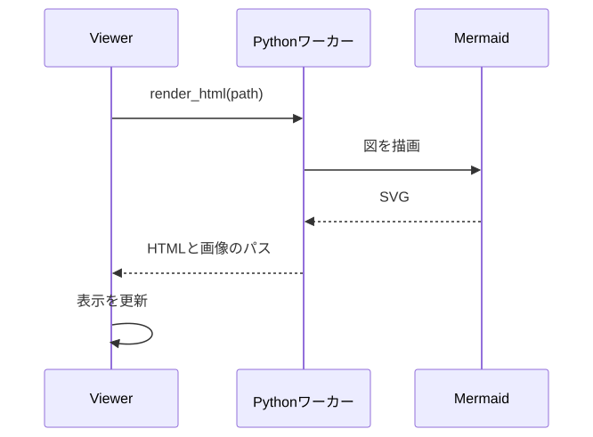
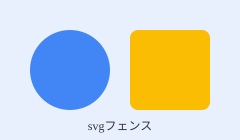

計測用の文書（HTML表示の候補の比較）
この文書は、Markdown Viewerの表示方法（#180）を、同じ条件で比較するための固定の原稿です。実際のREADMEや仕様書に近い構成（見出し、表、コード、図、alert、色付きの文字）を含みます。make_fixture.pyが、HTMLと図の画像にします。
概要
text-compositorは、複数のテキストから文書を組み上げるツールです。Markdownの変換に加えて、Mermaid・PlantUML・D2・GraphvizなどのDiagrams as Codeを、図として描画します。[[用語]]のような記法や、赤い文字・小さい文字のような装飾も使えます。
- 単一のMarkdownを、PDFまたはHTMLにできます。
- 図は、生成したSVGをキャッシュして再利用します。
- 警告とエラーは、原稿の行つきで返します。
- Pythonの常駐ワーカーが、ビルドのあいだ、Mermaidのブラウザを使い回します。
Note
計測では、この文書を全候補に同じ内容で表示させます。表示の忠実度も、この文書で確認します。
Warning
生のHTMLは、PDFと同じく、捨てて警告します。
図
フローチャート

シーケンス図

クラス図

図とテキストの2カラム
|
左側に説明文を置き、右側に図を置きます。2カラムのレイアウトは、CSSの表で近似しています。
|
 |
表
| 候補 | 起動 | メモリ | 表示の忠実度 | 備考 |
|---|---|---|---|---|
| WebView2（標準） | 未計測 | 未計測 | 高い | Windows専用 |
| WebView2（調整版） | 未計測 | 未計測 | 高い | ブラウザ引数で調整 |
| Tauri（wry） | 未計測 | 未計測 | 高い | Rust |
| ブラウザ＋ローカルサーバ | 未計測 | 未計測 | 高い | 専用ウィンドウではない |
| 軽量HTMLエンジン | 未計測 | 未計測 | 未確認 | JSなし |
| Electron | 未計測 | 未計測 | 高い | 基準 |
| 層 | 状態 | 説明 |
|---|---|---|
| Harness | 実装済み | 常駐ワーカーとJSON行の通信 |
| Loop | 検討中 | ファイル監視と自動更新 |
| Render | 未着手 | 表示方法の決定待ち |
コード
from text_compositor import Session
with Session() as session:
result = session.render_html("doc.md")
if result.ok:
print(result.html_path)
for d in result.diagnostics:
print(d.severity, d.message, d.file, d.line)
python -m text_compositor.worker
document:
title: 仕様書
toc: true
plugins:
mermaid: true
plantuml: false
本文（長めの文章）
Markdown Viewerに求められるのは、余計な機能を持たずに、原稿を素早く読めることです。エディタ機能はなく、ファイルを保存して再読み込みすると、表示が更新されます。既存の汎用Markdown Viewerには、Diagrams as Codeの図を描画できるものが見当たらないため、text-compositorの中核を使って、図つきのMarkdownを表示できるViewerを作ります。
表示の方法は、軽さ、安定性、見た目、実装の手間で比較します。Electronのように重いものが多いため、起動時間、メモリ、プロセス数、配布サイズを、実測で確認します。WebView2は、標準の使い方では重い印象がありますが、起動方法を調整すると軽くなる可能性もあります。
原稿の変更を検知して、表示を自動で更新する機能は、別のissueで扱います。ここでは、ファイルを書き換えて再読み込みするまでの時間だけを測ります。図の生成には、Mermaidのブラウザ、PlantUMLのJava、D2のバイナリが要りますが、生成済みのSVGを表示するだけなら、表示側にJavaScriptは要りません。
長い文書でも、スクロールが滑らかで、再読み込みのときに位置が飛ばないことが望まれます。この文書は、計測のために、ある程度の長さを持たせています。以下の段落は、文字数を増やすための、同じ内容の繰り返しです。
Markdown Viewerに求められるのは、余計な機能を持たずに、原稿を素早く読めることです。エディタ機能はなく、ファイルを保存して再読み込みすると、表示が更新されます。既存の汎用Markdown Viewerには、Diagrams as Codeの図を描画できるものが見当たらないため、text-compositorの中核を使って、図つきのMarkdownを表示できるViewerを作ります。
表示の方法は、軽さ、安定性、見た目、実装の手間で比較します。Electronのように重いものが多いため、起動時間、メモリ、プロセス数、配布サイズを、実測で確認します。WebView2は、標準の使い方では重い印象がありますが、起動方法を調整すると軽くなる可能性もあります。
原稿の変更を検知して、表示を自動で更新する機能は、別のissueで扱います。ここでは、ファイルを書き換えて再読み込みするまでの時間だけを測ります。図の生成には、Mermaidのブラウザ、PlantUMLのJava、D2のバイナリが要りますが、生成済みのSVGを表示するだけなら、表示側にJavaScriptは要りません。
画像と装飾
青い文字、緑の文字、取り消し線、インラインコード、リンク。
- 順序つきリストの1番目
- 2番目
- 入れ子の項目
- もう一つの項目
- 3番目
- 完了したタスク
- 未完了のタスク
2列の文章
これは2列に分けて表示する文章です。列の分割は、CSSのcolumn-countで近似しています。表示側のエンジンが、この指定に対応しているかを確認するための段落です。これは2列に分けて表示する文章です。列の分割は、CSSのcolumn-countで近似しています。表示側のエンジンが、この指定に対応しているかを確認するための段落です。
おわり。